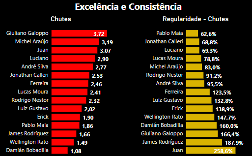
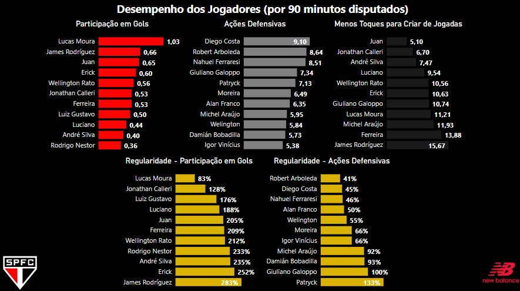

Alta Performance, Disciplina e Regularidade
Desempenhar em alto nível esportivo deveria ser a grande meta de todos os atletas. Manter-se regular nesse desempenho ao longo de um determinado período também é fundamental.
Um desejo de qualquer torcedor ou técnico é acompanhar o jogo do seu clube e ver que determinado atleta está jogando bem. E mais, jogando bem em uma sequência de jogos, sem oscilar. É sobre ter aquela sensação de que, antes de começar o jogo, saber que o meio-campista vai se posicionar para dar pelo menos dois chutes na partida.
Ser constante em algo pode ser um grande desafio. Imagine quando você, após um longo período de sedentarismo, resolveu começar a ir à academia ou praticar algum esporte. É muito provável que em muitos dias você tenha falhado em cumprir essa meta. Agora, imagine um atleta profissional, que tem a capacidade de manter a excelência de forma regular, sem falhar, jogo a jogo, ação por ação.
Como podemos mensurar algo que nos indique o quão constante alguém é em determinada característica? Aí é que encontramos o coeficiente de variação. Não se assuste com o nome; é uma medida que certamente você vai querer aplicar no seu dia a dia.
Zubeldia e Alegria
Atualmente, o São Paulo está vivendo uma ótima fase com seu técnico Zubeldia. Sendo assim, quem seriam os jogadores mais regulares do time neste ano, que contribuem fielmente para os bons resultados? As análises a seguir foram feitas a partir dos jogos de 2024, considerando apenas jogadores que entraram em campo no mínimo seis vezes.
Quando queremos verificar a performance de um atleta, fatalmente caímos na média, por ter o poder de resumir a trajetória do jogador em um certo período de tempo. Por exemplo, o jogador do São Paulo que possui mais chutes executados neste ano é o Galoppo, com uma média de 3,72 chutes por jogo.

Mas, em relação à regularidade, o Galoppo seria também regular nessa média de chutes? Isto é, ao longo dos jogos, ele mantém esse nível de excelência? Podemos usar então o coeficiente de variação (CV), que nos fornece uma métrica percentual do quão essa média é representativa. Onde, quanto maior o CV, há mais irregularidade ao longo das observações (jogos), e quanto menor, há mais regularidade.
Portanto, a partir dos gráficos, notamos que entre os jogadores que mais executam chutes, o Galoppo é o que mais oscila ao longo dos jogos, mostrando que sua média pode depender muito de partida a partida. Mas quais são alguns motivos para isso acontecer?
- O jogador pode estar em uma fase de oscilação onde não consegue desempenhar consistentemente, o que geralmente pode acontecer com jogadores de base, uma vez que estão no início de sua trajetória no profissional.
- O atleta pode atuar bem em contextos específicos, como em certas formações, estilos de jogo, nível de dificuldade da partida, tipo de adversário, etc.
Um olhar sobre a consistência
No entanto, em contrapartida, temos três jogadores que se destacam em manter um bom nível de regularidade nos chutes. Pablo Maia, Calleri e Luciano são os melhores, respectivamente. Com um certo destaque maior para o Luciano, que tem em média aproximadamente 0,4 chutes a mais por jogo que o Calleri, sendo o quarto jogador que mais chuta na equipe, mantendo um nível bem próximo da regularidade do argentino.
Por outro lado, temos o Pablo Maia, que nem tem a “obrigação” de executar muitos chutes a gol, atuando como volante, exercendo uma média de 1,86 chutes por jogo, mas com uma surpreendente regularidade. Isso me faz recordar transmissões da Rádio SPFC Digital, em que o comentarista Ricardo Leite, desde o ano passado, comentava que o Pablo Maia dava no mínimo um chute a gol a longa distância em todo jogo, mostrando sua regularidade nessa característica. Creio que o seu comentário foi baseado muito no intuitivo, acompanhando inúmeros jogos do atleta no atual Morumbis.
Após essa análise, temos a prova dessa noção intuitiva e, ainda mais, podemos expandir essa breve noção para outros atletas e características que não estão no nosso imaginário, nos fornecendo novos horizontes sobre a performance dos jogadores. Esse é o poder da estatística.
Em seguida, deixo um dashboard com outras métricas, e fica a cargo do torcedor e possíveis amantes dos dados interpretarem as nuances entre a capacidade de ter excelência em alguns fundamentos e ainda manter a consistência ao longo do tempo.
